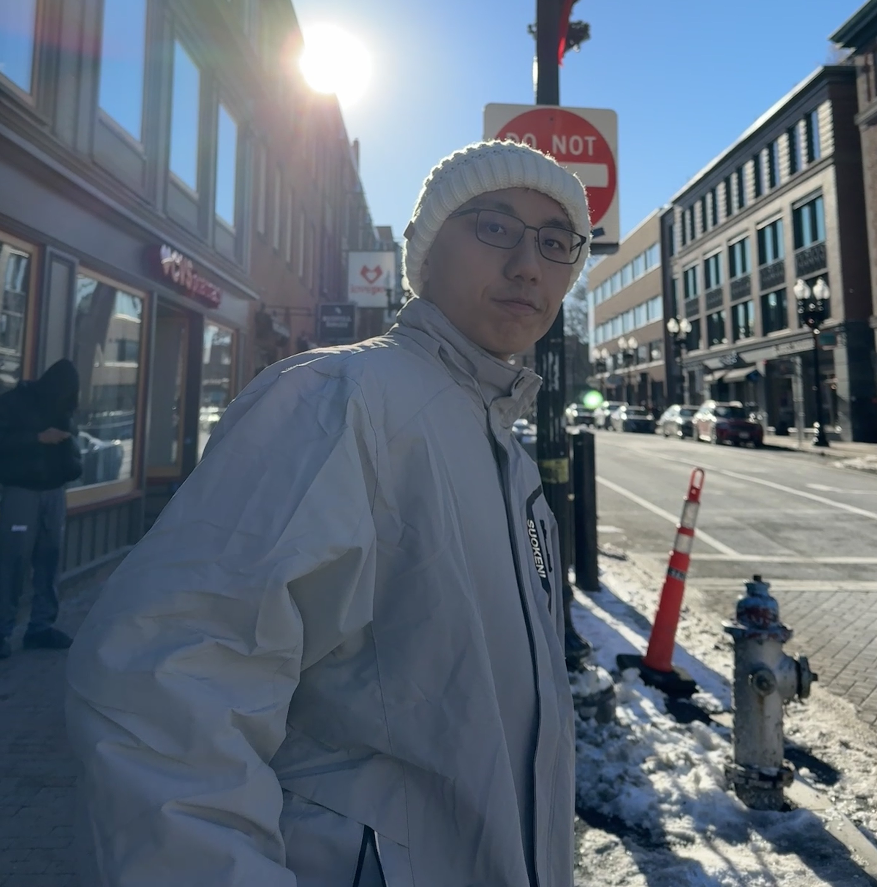
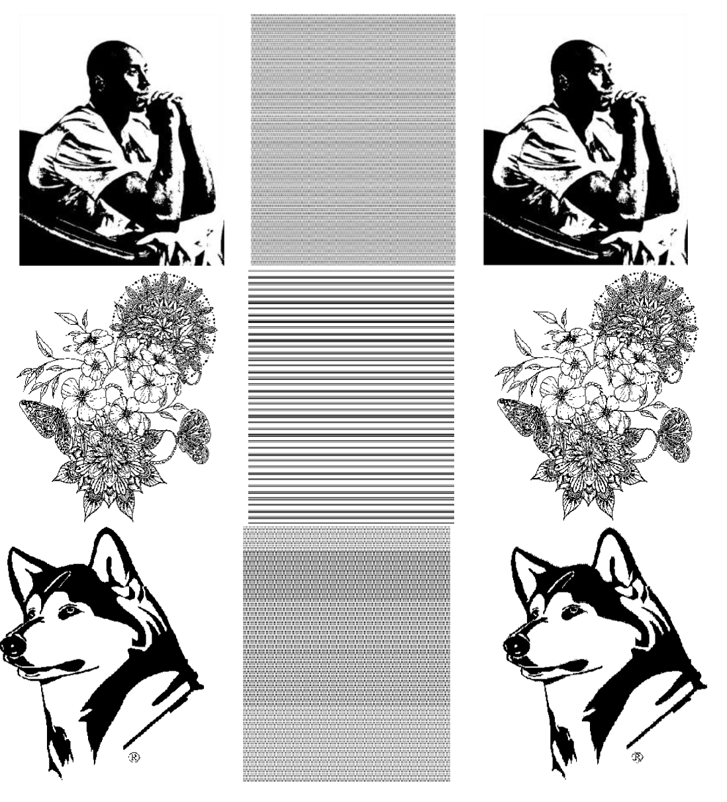
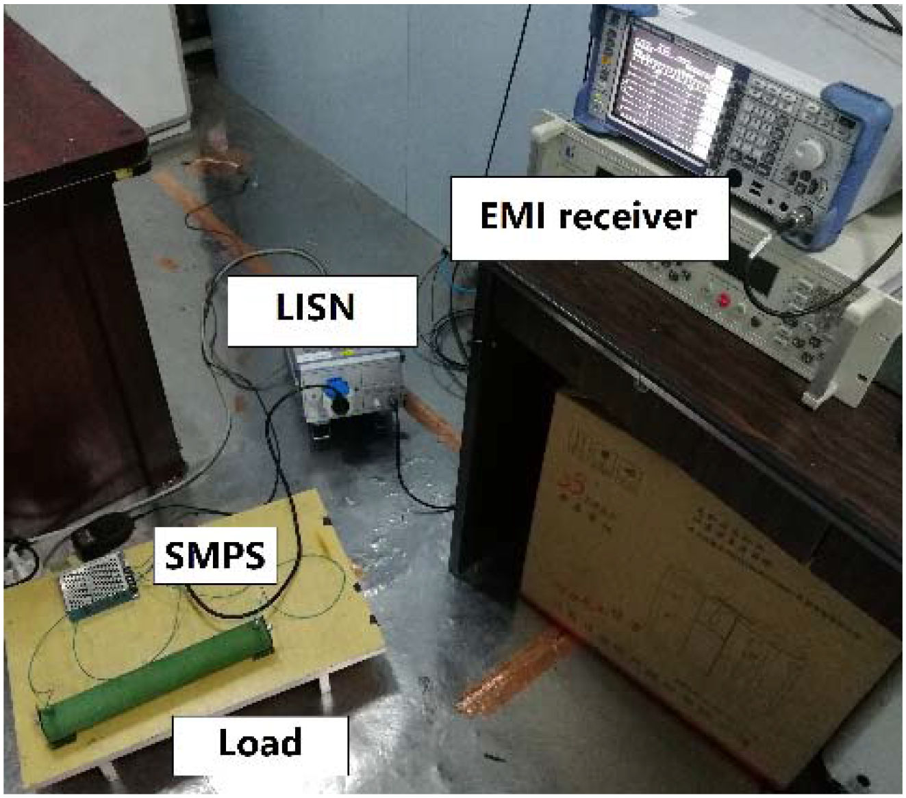
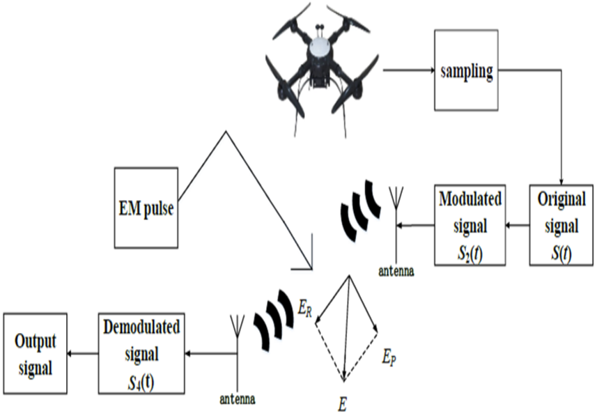
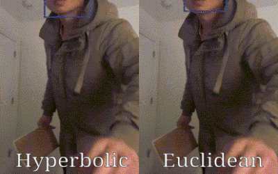
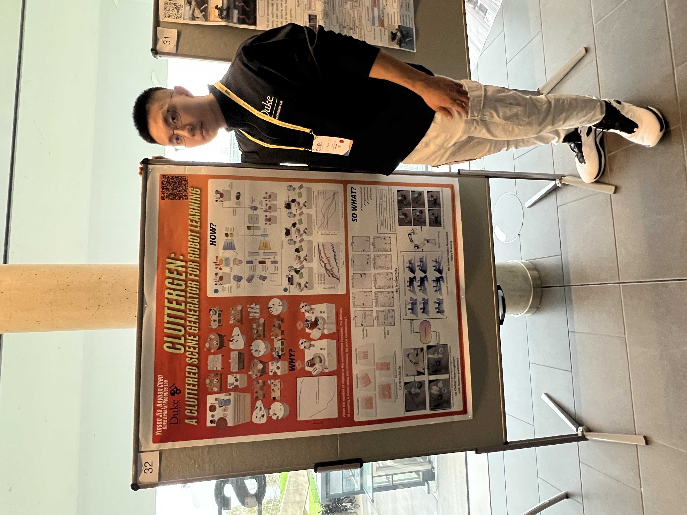
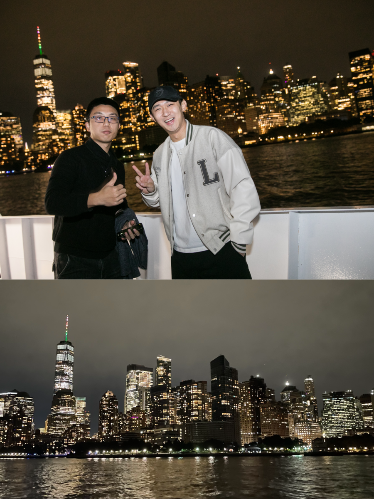
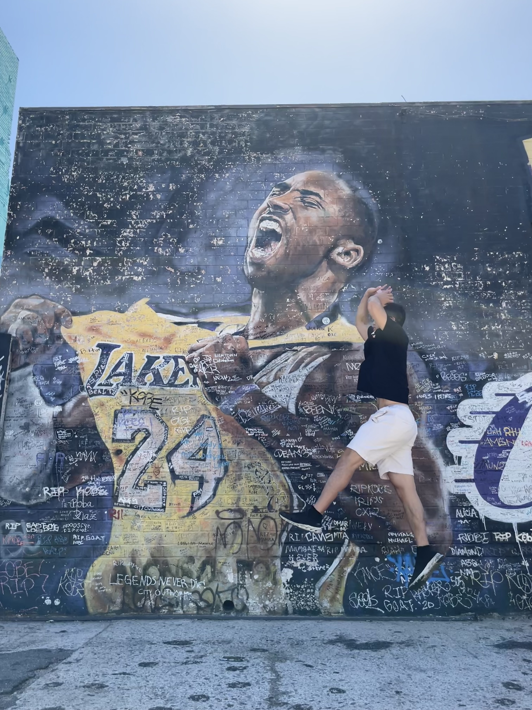

Yinsen Jia
Train the same, remain the same 🦾
Ph.D. Student
Electrical and Computer Engineering
Duke University
Member,
General Robotics Lab (GRL)
LinkedIn / X / GitHub / Google Scholar

I am always interested in working with highly motivated undergraduate and master's students. If you are at Duke and want to discuss research opportunities, please feel free to email me!
I am a Ph.D. student in Electrical and Computer Engineering at Duke University advised by Professor Boyuan Chen. My research lies at the intersection of robot learning, control, and manipulation, with a focus on how robots can use temporal structure, prior knowledge, multimodal feedback, and scalable simulation to act robustly in dynamic, contact-rich environments. More broadly, I aim to build robots that can autonomously interact with, understand, and manipulate the physical world—as capable assistants and trustworthy friends. 🤖.
I obtained my master's degree in Electrical Engineering at Columbia University (2022) and my bachelor's degree in Electrical and Automation Engineering from Nanjing Normal University (2020). I was also a short-term student at Rice University majoring in Electrical Engineering (2021).
Before joining Duke, I was a research assistant in the Robot Learning and Control Group at Nanjing University with Professor Chunlin Chen and led the UAV Communication Link Denoising Group in Jiangsu Electromagnetic Compatibility Engineering with Professor Wei Yan. During my master's study, I worked with Professor Shuran Song in Columbia Artificial Intelligence and Robotics Lab, and interned as a deep learning researcher at Kodiak Robotics.
*: indicating equal contribution. You can also check my Google Scholar profile.








